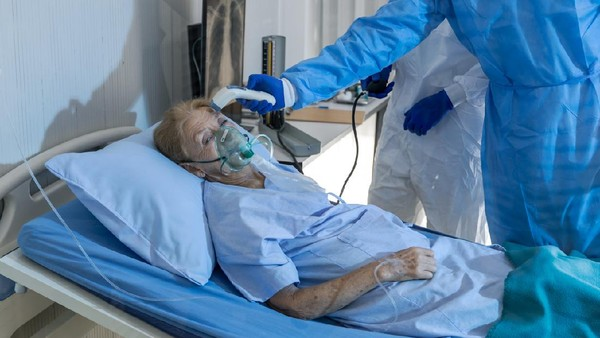
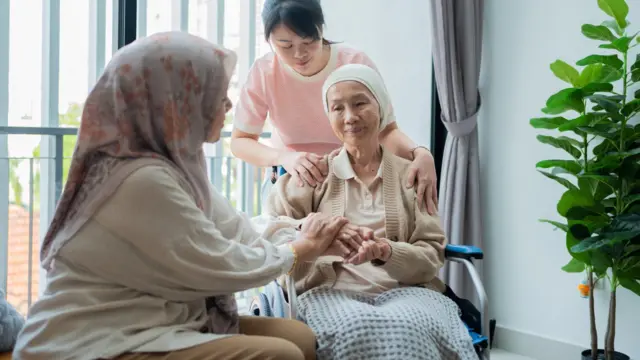

Cerita Pasien
Kami ingin berbagi cerita perjalanan pasien kami dan melihat kaitannya dengan perjalanan Anda.

Kisah Sukses
Apa Kata Mereka Tentang Hospitals
Bersyukur, orang tua saya memutuskan untuk bawa langsung ke Hospitals karena neurosurgery-nya nomor 1 di Indonesia — Hanny
Kesembuhan bagi saya bukan cuma sembuh dari kista endometriosis. Saya kembali utuh untuk diri saya sendiri dan mereka yang saya sayangi, melalui operasi robotik di Hospitals — Sagita.
Jika merasa pusing hebat yang berbeda dari biasanya, vertigo berputar, kehilangan keseimbangan, dan kesulitan berbicara, jangan tunggu lebih lama. Lebih baik langsung ke IGD Hospitals Jantung Diagram Cinere. – Melly
